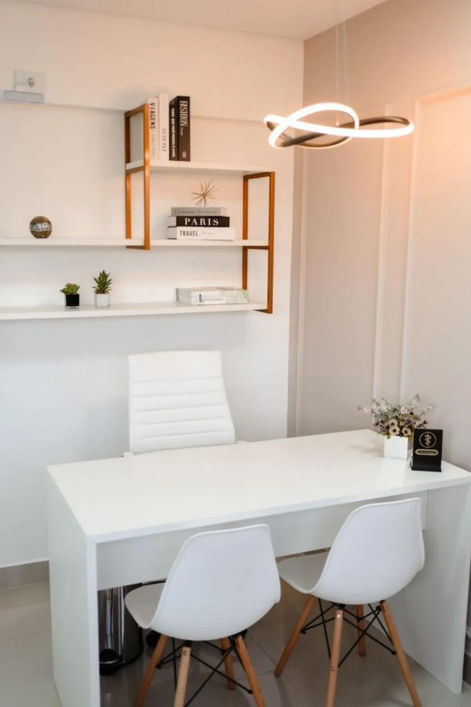
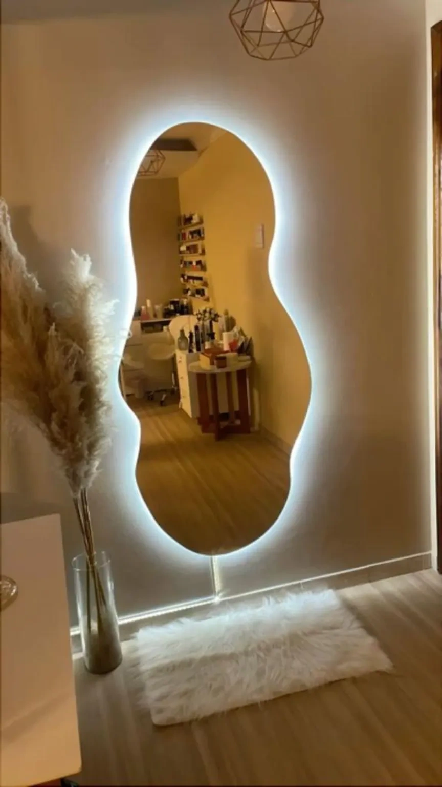

Estética facial
Microagulhamento, cuidados com a textura da pele e rejuvenescimento facial.
ESTÉTICA INTEGRATIVA · SALVADOR, BA
Cuidados faciais e corporais personalizados, com atenção à naturalidade, à autoestima e às particularidades da sua pele.
Agende sua avaliação ↗
UM OLHAR INTEGRAL
Microagulhamento, cuidados com a textura da pele e rejuvenescimento facial.
Cuidados voltados à aparência de estrias, manchas e à qualidade da pele.
Conheça as indicações, limitações e cuidados da técnica em uma avaliação individual.

CONHEÇA A PROFISSIONAL
Biomédica esteta, analista clínica, administradora e palestrante. Atua na área da beleza e estética desde 1997, inicialmente na gestão e consultoria de clínicas e salões.
Com formação em Administração, uniu sua experiência em gestão à paixão pela estética. Também incentiva mulheres e profissionais da área por meio da educação e do compartilhamento de conhecimento.
Entre em contatoO CONSULTÓRIO



CONHECIMENTO
Consulte as informações sobre cursos e próximas oportunidades diretamente no perfil profissional.
Conhecer no InstagramDÚVIDAS FREQUENTES
Entre em contato pelo perfil profissional para consultar horários.
A avaliação individual ajuda a identificar opções adequadas às suas necessidades.
Solicite informações diretamente à profissional.